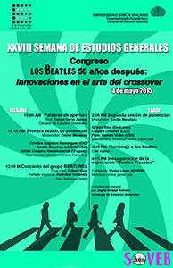
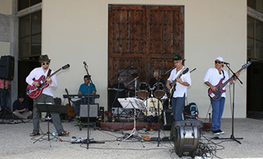
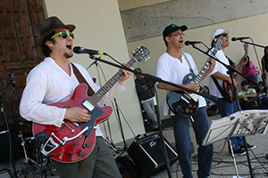
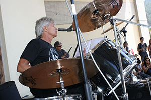
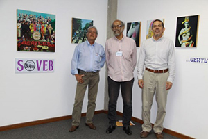

para el Estudio de Los Beatles
Dr. Emilio Mendoza Guardia, Presidente
Quinta La Perla, El Toronjil
San Antonio de los Altos, 1204 Venezuela
+58 414 396 7463 • sovebeatles@gmail.com • https://ozonojazz.com/soveb/
Beatles' 50º Anniversary Gift
The 'Abbey Road-World Project'
The 'Abbey Road-World Project'
The Venezuelan Society for the Study of
The Beatles (SoVeB), initiated the 'Abbey Road-World
Project' in May, 2015: a thankful, 50th Anniversary gift for
all the joy that The Beatles have brought to the world
through their music. The project consists of promoting until
2020, the renaming with 'Abbey Road' of a left-handed street
in at least one city of every nation of the world that may
have such a road, commonly known as an 'English street' that
for some traffic reason exists within the usual right-handed
traffic of most countries.
It involves the installation of the corresponding street plates in the style of the original road in London with any appropiate local variation, and, if possible, the painting of a zebra-crossing near to it. Its innauguration could be accompanied with a music concert of Beatles' tunes, a performance or happening, congress, exhibition, or simply by taking a photograph of people crossing it. A corresponding web page will be built as the project catches on, so please send SOVEB a photograph of your Abbey Road!
It involves the installation of the corresponding street plates in the style of the original road in London with any appropiate local variation, and, if possible, the painting of a zebra-crossing near to it. Its innauguration could be accompanied with a music concert of Beatles' tunes, a performance or happening, congress, exhibition, or simply by taking a photograph of people crossing it. A corresponding web page will be built as the project catches on, so please send SOVEB a photograph of your Abbey Road!
SoVeB - Sociedad
Venezolana para el Estudio de Los Beatles
¿Quiénes somos?
Un grupo de estudiosos, músicos, artistas y
pensadores de Venezuela, que decidió reunirse en una sociedad
civil sin fines de lucro para establecer una organización nacional,
interdisciplinaria e inter-profesional en función de
promover el estudio, creación, fomento y divulgación de la
producción musical, audiovisual, literaria, artística y
académica de y sobre Los Beatles. Se fundó en octubre,
2013, en San Antonio de Los Altos, estado Miranda,
Venezuela, por la iniciativa de Emilio Mendoza, Víctor Lares y
Orlando Ascanio.
¿Qué hemos hecho?
El 4 de mayo, 2015, organizamos en
conjunto con el Decanato de Estudios Generales,
Universidad Simón Bolívar (USB), Caracas, un congreso
internacional sobre el fenómeno musical de Los Beatles
en su 50avo aniversario, coordinado por Ingrid Salazar
del Decanato, dentro del marco de la XXVIII Semana de
Estudios Generales.
Congreso "Los Beatles 50 años después: Innovaciones en el arte del crossover"
La producción musical,
audiovisual, iconográfica y literaria del
cuarteto de Liverpool en la década de los sesenta, se puede
examinar a través de sus innovaciones en la
creación de nuevos lenguajes y conceptos, así como medios y canales
de consumo. En especial, el procedimiento del
crossover aparece como una constante en su creación,
que resalta a primera vista con la fusión de
música rock y popular inglesa con la música clásica de la India
a partir del año 1965, desde la pieza Norwegian
Wood en adelante. No obstante, la fusión de ideas y
prácticas musicales de diferentes culturas y
ámbitos se puede encontrar reiteradamente en muchos otros aspectos de
su creación: la integración de los
instrumentos sinfónicos con el instrumental
pop, la mezcla del lenguaje del
blues y rock&roll con influencias latinas,
country, ska y música clásica; la composición de música
electroacústica dentro del empaque pop;
experimentación y aprovechamiento del desarrollo de la
tecnología de grabación; la inclusión del arte
audiovisual a la música como medios de inseparable coexistencia;
la utilización del teatro imaginario en la
música, entre muchos otros.
A partir del año 1965, hace cincuenta años, la influencia sostenida de Los Beatles se hace finalmente sentir en la música popular venezolana, con logros tangibles como el super hit Tu la vas a perder, versión en español del grupo venezolano Los Darts (1966) de la original You're going to loose that girl del álbum de los Beatles Help! (1965). Fue la intención del presente mini-congreso resaltar la importancia de este fenómeno musical sin precedentes para el desarrollo de la música como arte, como entretenimiento y como negocio global y, sobretodo, su rol en la conformación de la cultura pop venezolana.
A partir del año 1965, hace cincuenta años, la influencia sostenida de Los Beatles se hace finalmente sentir en la música popular venezolana, con logros tangibles como el super hit Tu la vas a perder, versión en español del grupo venezolano Los Darts (1966) de la original You're going to loose that girl del álbum de los Beatles Help! (1965). Fue la intención del presente mini-congreso resaltar la importancia de este fenómeno musical sin precedentes para el desarrollo de la música como arte, como entretenimiento y como negocio global y, sobretodo, su rol en la conformación de la cultura pop venezolana.
El evento incluyó las siguientes actividades:
- Se realizó una convocatoria pública e internacional,
solicitando proposiciones de ponencias para el congreso con
dos meses de antelación y con un jurado acreditado para
realizar la selección de las ponencias al congreso (Alfredo
Rugeles, Andrés Séger y Emilio Mendoza).
- Se presentaron 6 ponentes, 5 de Venezuela y uno de
Uruguay, con los siguientes temas:
(ver resúmenes en pdf)
Cristina de los Ángeles Izaguirre Domínguez
Hey Jazz: un estudio sobre la reinterpretación musical de la obra de Los Beatles en el jazz
Emilio Mendoza
Mach Schau!: El aporte de Los Beatles al desarrollo de la Música Visual
Julián Crispino Gastelumendi
Mañana nunca se sabe. Un análisis de Revolver
Gilbert Ríos
Sentido a la Vida: Influencia de Los Beatles en tiempos de turbulencia
Claudio Ordóñez
Los álbumes de Los Beatles y la estética de los empaques de las grabaciones musicales venezolanas
Pbtro Ramón Vinke
¿Es “Let It Be” un Canto a la Virgen?
-
Se asignó el nombre de "Abbey Road" a la calle inglesa de la USB con la colocación de un cartel fiel al diseño original de la calle londinesa, con sus consecuentes fotografías en el cruce peatonal. Esta iniciativa fue el resultado de un proyecto final de los estudiantes Fany Sousa, Israel Leal, Isabel Piscitelli, Kenneth Puche; y Daniel Moussa
-
-
-
Se realizó un concierto de la banda beatles-revival de Caracas "Beatunes", dirigida por Gilbert Ríos, con la actuación como telonero de Asdrúbal Urdaneta con su guitarra y voz.

 
-
Se inauguró la exposición 'Beatles Visuales' en el primer piso de la Biblioteca Central, USB, con la iconografía de Los Beatles en cuatro etapas cronológicas, en curaduría de Víctor Lares.

Víctor Lares, Orlando Ascanio, Emilio Mendoza
Reseñas:
- http://usbnoticias.info/post/41022
- http://usbnoticias.info/post/41068
- http://usbnoticias.info/post/41067
- http://www.lapatilla.com/site/2015/05/06/la-usb-ahora-tiene-una-calle-abbey-road-en-honor-a-los-beatles/
Reseñas en PDF:
Afiliación
Si desea afiliarse a la SoVeB, envienos
un correo con su nombre, dirección, profesión/ocupación y
le indicaremos sobre la membresía y la agenda de
actividades, a: emiliomen@gmail.com
Estatutos de la SoVeB